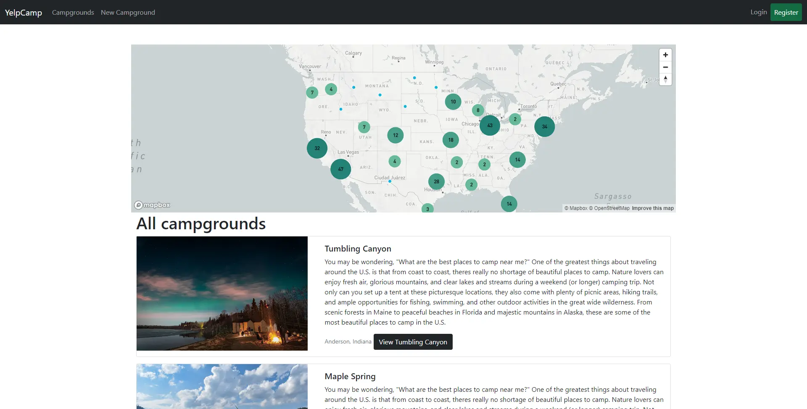
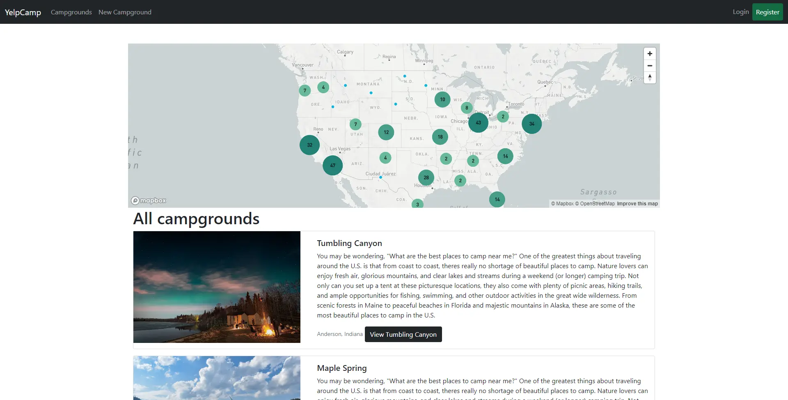
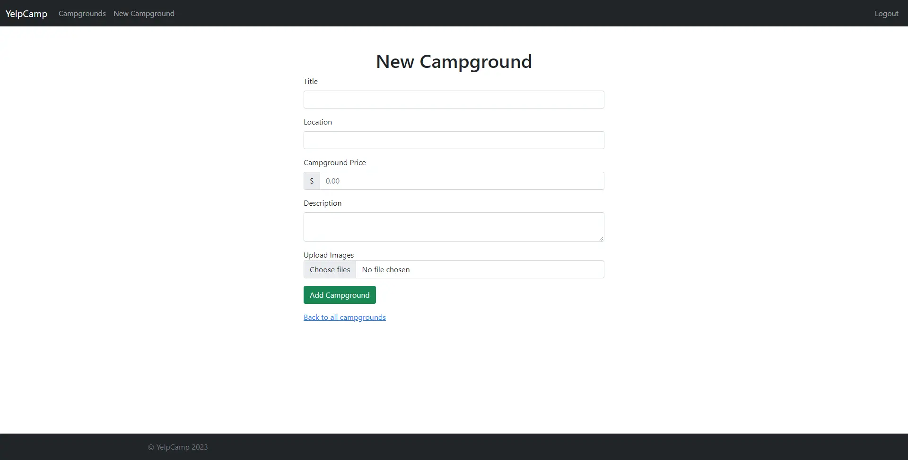
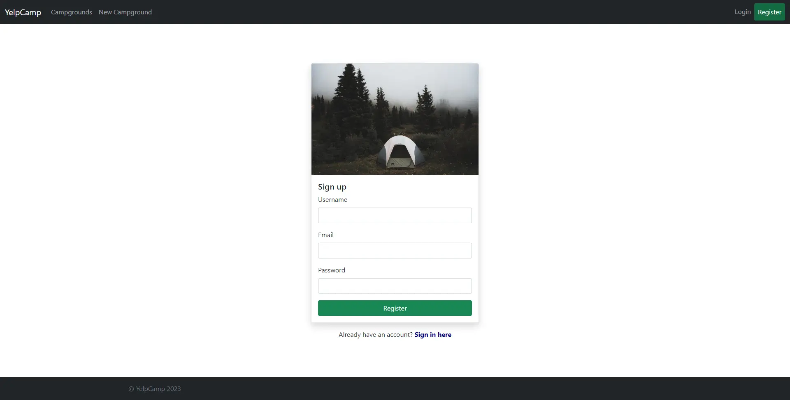
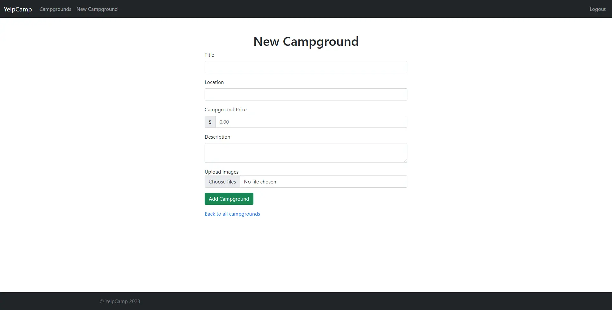
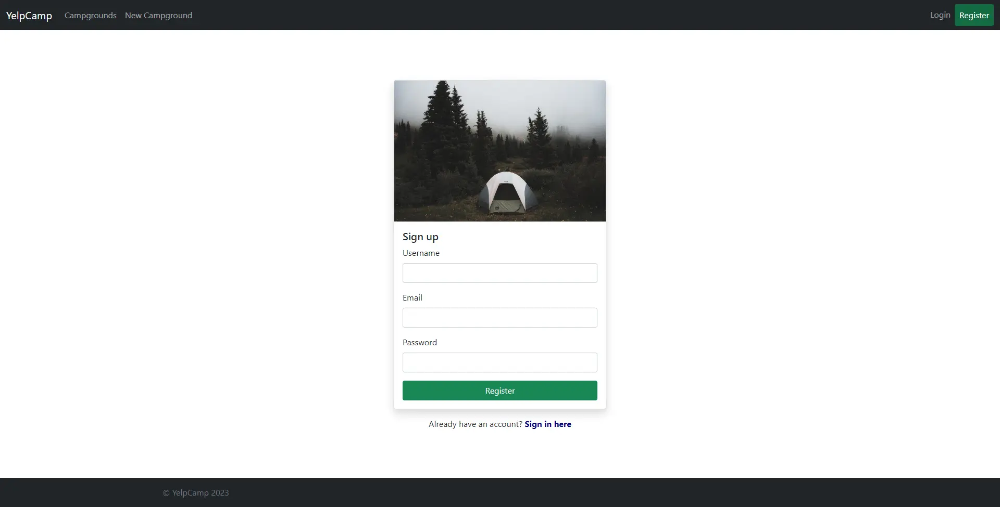

Yelp Camp
In this personal project, my primary focus was to create a full-stack web application that provides a secure and responsive environment for the user. Users can view, rate, create, edit, and delete their own campgrounds.
The front-end of the website was built with the CSS framework Bootstrap 5 because of its ease of use and responsive features.
Authentication and authorization are encrypted and stored via a Node.js tool called Passport.
I implemented the authentication with measures in place to ensure common security issues, such as SQL Injection and XSS.
After logging in the user also has an option to upload an image to the website, which will be stored in a cloud database tool called Cloudinary.
Node.js was used for server-side scripting. Express and MongoDB were employed to create a full-stack JavaScript application. As for the deployed sites database I opted to use Mongo Atlas.
I utilized the Mapbox API to both determine the location of campgrounds and pin them on a map. Furthermore, an interactive cluster map of all the campgrounds was created using the Mapbox API.
Izmantotās tehnoloģijas:
 

 


